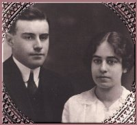
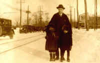
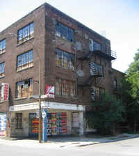

|

LEUR VIE ET LEUR ÉPOQUE
 Marie-Anna Caron épouse Rosario
Charette le 16 janvier 1917 dans la paroisse St-Zotique de Montréal. Ils sont
mineurs tous les deux.
C'est un mariage simple car Rosario est
en deuil de son père, Alphonse Charette jr, décédé le 9 juillet précédent. Il
est aussi orphelin de mère, Marie Lavoie étant décédée depuis le 19
novembre 1914. Elle n'avait que trente-neuf ans et serait morte d'une maladie contagieuse
en soignant un des ses enfants (souvenir de
Gérard).
Rosario
est né le 20 janvier 1897 au 1096 St-Antoine, St-Henri.
Lui et Marie-Anna se marient si jeunes sans doute parce que, n'ayant plus de famille,
il est pressé de fonder sa propre famille.
Il n'a plus
qu'un jeune frère de quinze ans, Alexandre. Ses autres frères et sœurs n'ont pas atteint
l'âge adulte, ayant succombés en bas âge lors d'épidémies. Peut-être, aussi, veut-il se soustraire à la conscription, que l'on
dit imminente.
 Le
jeune couple s'installe tout simplement dans la maison et les meubles
des parents de Rosario, au 1121 St-Antoine. Alphonse Charette jr et sa
famille avaient emménagés dans cette propriété en 1907, et ils y
vécurent jusqu'à leur mort. Il
est plausible de penser qu'Alexandre ait habité avec le nouveau couple,
sinon il a dû être pris en charge par son tuteur, sûrement un des ses
oncles, ou son grand-père Alphonse Charette sr.? Le
jeune couple s'installe tout simplement dans la maison et les meubles
des parents de Rosario, au 1121 St-Antoine. Alphonse Charette jr et sa
famille avaient emménagés dans cette propriété en 1907, et ils y
vécurent jusqu'à leur mort. Il
est plausible de penser qu'Alexandre ait habité avec le nouveau couple,
sinon il a dû être pris en charge par son tuteur, sûrement un des ses
oncles, ou son grand-père Alphonse Charette sr.?
Rosario a reçu un
bon héritage de son père Alphonse jr mais, étant mineur, il doit transiger avec
deux oncles qui ont été nommés tuteurs testamentaires. Sous toute réserve,
ces oncles seraient Aldéric Lavoie et Ernest Charette.
Selon le témoignage de
Fleurette Lavoie, cousine de Rosario, lui et Marie-Anna "formaient un beau
couple". Il est indéniable que Rosario aime beaucoup son épouse et il la
traitera "comme une reine" toute sa vie.
Par les
annuaires Lovell* nous pouvons suivre la famille de Rosario,
et aussi connaître son occupation.
De 1917 à 1919, le jeune
couple habite le 1121 St-Antoine, Rosario est ice mcht.
De 1919 à 1923 ils habitent le 444 Ste-Émélie, donc en biais de la mère de
Marie-Anna, Alphonsine, qui est au 455
Ste-Émélie. L'occupation de Rosario inscrite est mech.
De 1924 à 1926 ils vivent au 284 St-Philippe.
De 1926 à 1928 ils sont au 266 St-Philippe. Rosario est inscrit comme wood &
coal 1117 St-Antoine. Le 1117 St-Antoine est juste au coin de
St-Philippe, sur l'emplacement du garage que fera construire Rosario
plus tard.
En 1928, suite au changement de numérotation des adresses par la
municipalité, le 266 St-Philippe devient le 910 St-Philippe.
|

UNE ACTUALITÉ MOUVEMENTÉE
Marie-Anna et Rosario s'épousent à une époque plutôt houleuse, il ne faut pas oublier que la première guerre mondiale
fait rage en Europe. L'année 1916, qui vient de se
terminer, a eu une actualité mouvementée.
L'étirement de la guerre et
la crainte de la conscription sont à l'origine d'une échauffourée sur
la Place d'Armes, à Montréal le 24 août 1916. Les esprits s'échauffent,
transforment une assemblée de recrutement en manifestation anti-conscriptionniste.
Les soldats recruteurs se retirent alors que l'échauffourée vient près
de dégénérer en émeute. La séance de recrutement sera suspendue
pour éviter le pire.
|

Affiche de 1916 pour le
recrutement de canadiens-français
|

Un tank "en démonstration" sur la rue
Sherbrooke à Montréal en 1916, pour promouvoir l'engagement de recrues
|

Manifestation anti-conscription en 1917 à
Montréal
|
 29
août 1917. La conscription. Pressé d'accentuer l'effort de guerre
que le Canada avait promis à la Grande-Bretagne, et n'y arrivant
plus avec seulement le volontariat, le
gouvernement conservateur de Robert Borden fait adopter la Loi
sur le service militaire obligatoire par la
Chambre des communes, 101 voix contre 44, le 24 juillet 1917. Ce
sont surtout des libéraux, dont le chef Wilfrid Laurier, qui
s'opposent à cette mesure. Celle-ci reçoit un accueil plutôt
favorable dans l'ensemble du pays, sauf au Québec, où elle est
à l'origine de plusieurs manifestations houleuses. Avec
l'accord du Sénat, qui est obtenu le 29 août 1917, la nouvelle
loi entre en vigueur.
29
août 1917. La conscription. Pressé d'accentuer l'effort de guerre
que le Canada avait promis à la Grande-Bretagne, et n'y arrivant
plus avec seulement le volontariat, le
gouvernement conservateur de Robert Borden fait adopter la Loi
sur le service militaire obligatoire par la
Chambre des communes, 101 voix contre 44, le 24 juillet 1917. Ce
sont surtout des libéraux, dont le chef Wilfrid Laurier, qui
s'opposent à cette mesure. Celle-ci reçoit un accueil plutôt
favorable dans l'ensemble du pays, sauf au Québec, où elle est
à l'origine de plusieurs manifestations houleuses. Avec
l'accord du Sénat, qui est obtenu le 29 août 1917, la nouvelle
loi entre en vigueur.
Cette loi est très large et englobe tous les hommes valides de
18 à 60 ans (dans l'éventualité où un si large bassin de
recrues serait nécessaire), mais on vise, dans un premier temps,
les jeunes hommes. Elle est bientôt suivie par une proclamation
ordonnant aux célibataires de 20 à 34 ans de s'enrôler. Des
sanctions sont prévues pour punir ceux qui désobéiront à la
nouvelle loi. Cela n'empêche pas une violente manifestation de se
dérouler à Montréal, deux jours plus tard. Plusieurs policiers
se rendent sur les lieux pour calmer les récalcitrants. Le
lendemain, une autre altercation cause un décès.
13 janvier
1918. Le gouvernement libéral (province de Québec) de Lomer
Gouin fait adopter un décret permettant aux femmes et aux filles
de travailler la nuit dans les manufactures pour soutenir l'effort
de guerre.
28 février
1918. Le gouvernement d'Union (fédéral) de Robert Borden
met en application la Loi sur l'impôt de guerre. Elle lui permet
d'augmenter le taux d'imposition de toute personne sujette à
l'impôt régulier. Le gouvernement fédéral espère ainsi
retirer de 15 à 20 millions de dollars. Cet impôt devait
être seulement durant le temps de la guerre, mais il dure encore.
1 avril
1918. À Québec, des militaires chargent un groupe de
manifestants qui protestent depuis cinq jours contre la
conscription. Les soldats, qui tirent à la mitrailleuse, tuent
cinq manifestants et en blessent 70 autres.
22 avril
1918. Lundi matin, 6 heures, au 1121 St-Antoine, naissance de
Marie Thérèse Marguerite Rosianne , première née de Rosario
Charette et Marie-Anna Caron. Son parrain et sa marraine sont
Alphonse Charette sr et Rosianne Miron, ses arrière-grands-parents
paternels. La porteuse est "Mde Z. Laframboise, grand-mère",
soit Alphonsine. Elle est baptisée par l'abbé Paiement, à l'église
St-Henri. (référence:
un petit carnet où Marie-Anna notait les naissances)
29
septembre 1918. Craignant le communisme qui prend de
l'ampleur dans la foulée de la révolution bolchevique d'octobre
1917, le
gouvernement d'Union dirigé par Robert Borden rend passible
d'amende ou d'emprisonnement l'appartenance à 14 organisations «gauchistes»
considérées comme illégales, dont le Parti Socialiste et le
Parti social-démocrate.
Octobre
1918. Une terrible épidémie de grippe (espagnole) s'abat sur
l'Amérique à partir du mois d'octobre 1918. Amenée au Canada
par des soldats revenus d'Europe, elle se propage rapidement et
force les autorités à adopter des mesures
exceptionnelles. Le service d'hygiène impose la fermeture
des écoles, des cinémas, des théâtres et de tous les lieux
publics. La panique s'installe dans la population, le glas
sonne jour et nuit tant il y a de morts à enterrer.
Rosario
craint sûrement pour sa jeune famille, lui qui a perdu sa mère,
ses frères et sœurs lors d'épidémies au début du siècle.
 25 avril 1919. Alphonse
Charette sr, grand-père de
Rosario, décède subitement. On peut supposer que c'est une
grande perte pour Rosario parce que son grand-père avait
sûrement remplacé son père et qu'il pouvait compter sur son
soutien et ses conseils. 25 avril 1919. Alphonse
Charette sr, grand-père de
Rosario, décède subitement. On peut supposer que c'est une
grande perte pour Rosario parce que son grand-père avait
sûrement remplacé son père et qu'il pouvait compter sur son
soutien et ses conseils.
La présence de son
grand-père et son autorité le protégeaient probablement. Plus
tard, un de ses oncles-tuteurs aurait privé Rosario et son
frère d'une partie de leur héritage. On parle encore dans la
famille de "Ernest le croche"... Mais ça, ce
sont des histoires de famille... invérifiables si longtemps
après, bien que certains diront "pas de fumée sans feu".
15
décembre 1919. Dimanche vers minuit, au 444 Ste-Émélie, Rosario et Marie-Anna ont leur
premier fils, Joseph Léo Fernand Benoît. Son parrain et sa marraine
sont Zénon Laframboise et Alphonsine Gagnon, ses grands-parents maternels. La
porteuse est Mme S. Bédard, grand tante. Il est baptisé par l'abbé
Potvin, vicaire à l'église St-Zotique. (référence:
un petit carnet où Marie-Anna notait les naissances)
19 octobre 1921. Mercredi, vers 3 heures après minuit, au 444
Ste-Émélie, naissance de Joseph Jean Paul Gérard. Son parrain et
sa marraine sont Jean Caron et Nellie Villemaire, son oncle et sa
tante. La porteuse est "Mde Z. Laframboise, grand-mère",
soit Alphonsine. Il est baptisé par l'abbé Potvin, à l'église
St-Zotique. (référence:
un petit carnet où Marie-Anna notait les naissances)
28 juin 1923. Jeudi, à 9 heures du soir, au 284 St-Philippe, naissance de
Joseph Armand Rosario Alphonse. En fait il portera le nom de Rosaire. Son parrain et sa
marraine sont Aldéric Lavoie et son épouse, son grand oncle et sa grande
tante. La porteuse est "Mme Lavoie arrière-grand-mère", soit
Anastasie Lortie-Lavoie, la grand-mère maternelle de Rosario. Il est baptisé
à l'église de St-Henri.
(référence: un petit
carnet où Marie-Anna notait les naissances)
En 1924, le 13 août, Rosario vit un autre deuil. Son frère
unique, Alexandre, meurt dans un accident
d'automobile.
Alexandre, né le 2 octobre 1901,
est célibataire. Il étudie en pharmacie, une toute
nouvelle faculté de l'université de Montréal. Ce jour-là, lui et Rosario reviennent d'on ne sait où. Les deux frères
se disputent car Alexandre veut aller chercher de l'argent chez leur oncle
Aldéric, un des oncles qui administrent leur
héritage, mais Rosario refuse
de l'accompagner. Il descend de voiture et rentre chez-lui à pied. Alexandre poursuit
seul son chemin, il a un accident au
cours duquel son automobile tombe dans le canal Lachine. (Récit
transmis par Ghislaine qui l'a entendu de Rita et
Fleurette Lavoie, cousines de Rosario)
Le doute
subsistera toujours chez Rosario au sujet de cet accident. Ses
enfants se rappellent (souvenir de Gérard) avoir entendu leurs
parents se questionner sur la possibilité d'un suicide. |

La famille de Rosario et de Marie-Anna, hiver 1926.
(Marie-Anna est enceinte de Jean-Noël)
26
juillet 1926. Lundi, 5 heures et demi du matin, au 266 St-Philippe,
naissance de Joseph Jean-Noël. Son parrain et sa marraine sont Joseph et Clara
Alexander, son grand oncle et sa grande tante La porteuse est Garde
Viau. Il est baptisé à l'église St-Henri. (référence:
un petit carnet où Marie-Anna notait les naissances)
À chaque naissance
Rosario donne un cadeau à Marie-Anna. Pour celle de Jean-Noël elle
reçoit une horloge grand-père.
 1926
est aussi l'année où la famille Rosario Charette
emménage au 266 St-Philippe, qui deviendra le 910 lors des changements
de numérotation des adresses en 1928. Ils
habitent le rez-de-chaussée de cette propriété de trois étages
pendant plus de dix ans. Rosario loue les étages
supérieurs. C'est tout près de
l'intersection St-Antoine où Rosario travaille. Ce dernier aurait
été propriétaire de plusieurs autres édifices. 1926
est aussi l'année où la famille Rosario Charette
emménage au 266 St-Philippe, qui deviendra le 910 lors des changements
de numérotation des adresses en 1928. Ils
habitent le rez-de-chaussée de cette propriété de trois étages
pendant plus de dix ans. Rosario loue les étages
supérieurs. C'est tout près de
l'intersection St-Antoine où Rosario travaille. Ce dernier aurait
été propriétaire de plusieurs autres édifices.
Ils vont souvent à la
campagne voir des parents ou amis qui ont un chalet. Ils louent
eux-mêmes des chalets pour les vacances. La famille va aussi dans la
région du Saguenay visiter des parents de Marie-Anna. Un d'entre eux
souffrant de sclérose en plaques, Rosario aurait fabriqué une sorte de
chariot roulant pour lui permettre de se déplacer (Récit
transmis par Ghislaine qui l'a reçu de sa famille).
Rosario aime les
automobiles et il en change souvent. Il tient cela de son père et son
grand-père Charette. Dès l'arrivée de l'automobile sur le marché,
ces derniers en ont achetées et ont même participé au
premier rallye (sur des routes de terre) Montréal-New-York au début du
siècle.
|

Rosario, Thérèse et Benoît
|
 : :
Thérèse, Benoît, 1924
|

Rue St-Philippe,
Gérard,Benoît,Jean-Noël
|
En novembre 1928 Rosario dépose à l'hôtel de ville de
Montréal les plans d'un garage qu'il veut construire au 4271-4277
St-Antoine, coin St-Philippe, à St-Henri. À noter que, cette
même année, la numérotation des adresses change et que le
1117 St-Antoine devient le 4271, toujours à l'intersection
St-Philippe.
En 1929 Rosario fait démolir les
édifices pour faire construire son commerce, le Garage Philippe. (Les annuaires
Lovell* couvrant cette
période ne mentionnent plus aucun édifice sur St-Antoine coin
St-Philippe).
Dans l'annuaire Lovell* de1930, pour la première fois, le Garage Philippe apparaît au 4271
St-Antoine, coin St-Philippe. Rosario est bien identifié comme le propriétaire.
Jusqu'en 1938, on trouve "Charette R prop Garage Philippe 910 St-Philippe".
|
   
    |
|

Garage
Philippe, de Rosario
|

Garage en 2006, photo de David
|
LE "GARAGE PHILIPPE", UN GARAGE MODERNE
Le service des pompes du garage
est ouvert
24 heures par jour, 7 jours par semaine. Ce garage a quatre étages, on y monte les autos
aux étages par un ascenseur. C'est là que les jeunes fils de Rosario
font leur apprentissage de la conduite automobile. Les employés de Rosario
s'amusent à laisser
conduire les fils du patron pour faire entrer ou sortir les voitures de
l'ascenseur (souvenir
de Gérard).
Le comptable de Rosario est Henri Philippe, il est aussi un de ses
locataires. Sa conjointe, Imelda Verreault, est une bonne
amie de Marie-Anna. Leur fille Rachel épousera Rosaire, fils de
Rosario. Imelda a témoigné plus tard qu'Alphonse père et fils, et donc Rosario
par héritage, possédaient de nombreuses propriétés dans St-Henri. (témoignage
reçu par Ghislaine)
Au 4277 St-Antoine (une
partie du rez-de-chaussée du garage)
Rosario loue dès le début, et ce jusqu'en 1939, un local à
Napoléon Lapierre. Ce dernier, bien
que résidant à l'Abord-à-Plouffe,
y installe sa cordonnerie.
|
En 1929,
le 12 octobre, Marie-Anna perd sa mère
Alphonsine Gagnon.
Le 24 octobre 1929, le jeudi
noir, a lieu le crash boursier qui déclenche une
grave crise économique mondiale.
Rosario construit quand même son commerce. Mais des
années plus difficiles financièrement s'annoncent pour lui qui,
semble-t-il, est mal conseillé et n'est pas l'homme d'affaires le plus
avisé. Il n'a pas la "bosse des affaires", et il est très
généreux avec tous.
En 1931, le 26 mars, Marie-Anna accouche d'un "enfant mort
née", donc, d'une
fille.
(référence: un petit carnet où Marie-Anna notait les naissances)
En 1935, le
26 avril, décès de la grand-mère de Rosario,
Rosianne Miron, veuve d'Alphonse Charette sr. Elle était le dernier
pilier et le centre de la grande famille Charette de St-Henri.
|


|
Rosianne
réunissait autour d'elle plusieurs enfants, petits-enfants et
arrière-petits-enfants. Sa grande maison de pierre construite
par son époux, au 4230 St-Antoine, avait connu d'innombrables
réunions familiales pour souligner des moments heureux ou
douloureux.
Le sous-sol y était réservé
spécialement pour ces réunions, on y retrouvait même une
cuisine aménagée pour les réceptions.
Plusieurs jouaient du piano et
d'autres instruments de musique et les gens s'amusaient bien
durant ces fêtes. On chantait, dansait, jouait aux cartes.
(Récit
transmis par Ghislaine qui l'a entendu de Rita et Fleurette Lavoie,
cousines de Rosario)
|
3 octobre 1935, jeudi dans la nuit, à l'hôpital Ste-Jeanne d'Arc, naissance de
Marie-Anna Françoise Ghislaine, le dernier enfant de Rosario
et Marie-Anna. Son parrain et sa marraine sont Benoît et Thérèse
Charette, son frère et sa sœur. La porteuse est Mme J.Caron,
soit sa tante Nellie, épouse de Jean Caron. Elle est baptisée par
l'abbé Potvin à l'hôpital Ste-Jeanne-d'Arc. (référence:
un petit carnet où Marie-Anna notait les naissances)
On peut présumer que, suite à la naissance d'un enfant mort-né
quelques années plus tôt, et peut-être aussi considérant l'âge de
Marie-Anna, cette dernière a choisi d'accoucher, cette fois-ci, à l'
hôpital. Rosario a les moyens financiers pour couvrir ces frais, et il espère
sans doute ainsi éviter toutes complications pour la mère et
l'enfant.
 À
la fin des années 1930 Rosario est malade,
son fils Jean-Noël se rappelle d'une infirmière à domicile
posant des ventouses dans le dos de son père, penché sur le
piano du salon. De quelle maladie souffre-il
exactement? Ghislaine se rappelle avoir toujours
entendu dire que son père avait un "coeur de boeuf",
un problème cardiaque lui interdisant de trop grands efforts
physiques. À
la fin des années 1930 Rosario est malade,
son fils Jean-Noël se rappelle d'une infirmière à domicile
posant des ventouses dans le dos de son père, penché sur le
piano du salon. De quelle maladie souffre-il
exactement? Ghislaine se rappelle avoir toujours
entendu dire que son père avait un "coeur de boeuf",
un problème cardiaque lui interdisant de trop grands efforts
physiques.
Rosario loue tout son garage pour 100$ par mois,
ne pouvant plus s'occuper de son commerce. Peu après, son
locataire sous-loue chaque étage pour 500$ par mois à
l'armée canadienne! Rosario le "prend personnel"
(souvenir de Jean-Noël), c'est-à-dire qu'il y voit là une
preuve de son incompétence en affaires. Cette perte financière, s’ajoutant
à d’autres, mine le moral de Rosario découragé et lui porte un coup
fatal.
En se basant sur l'annuaire Lovell* de
1939-1940 nous apprenons que Rosario vend le 910 St-Philippe à
"Ménard Vic et Daoust Miss
Cecile" et qu'il déménage en location au 339
St-Philippe. Le
4271 St-Antoine est devenu le Garage Bessette, ce qui laisse
entendre que Rosario a vendu son garage avant sa
mort, l'acheteur M. Bessette étant probablement celui qui avait
d'abord loué le garage quelque temps plus tôt.
Rosario
décède le 21 mai 1940 à l'âge de 42 ans.
Sa cousine Yolande Lavoie, qui vient de terminer son cours d'infirmière, se trouve à son chevet
la nuit de son décès. Elle avait
veillé sur Rosario les derniers temps, sur Marie-Anna aussi, très
éprouvée par la maladie de son époux, et sur les plus jeunes
enfants. (Récit
transmis par Ghislaine qui l'a entendu de Rita et Fleurette Lavoie,
cousines de Rosario)
 Ce décès est un choc pour toute la famille. Benoît, le fils
aîné, soutient sa mère comme il le peut. Il l'amène en voyage
à Ottawa durant l'été 1940, sans doute pour lui "changer les
idées". (photo
ci-contre). Ils iront aussi voir les
jumelles Dionne (souvenir de Ghislaine). Ce décès est un choc pour toute la famille. Benoît, le fils
aîné, soutient sa mère comme il le peut. Il l'amène en voyage
à Ottawa durant l'été 1940, sans doute pour lui "changer les
idées". (photo
ci-contre). Ils iront aussi voir les
jumelles Dionne (souvenir de Ghislaine).
Marie-Anna doit prendre conseil et planifier sa
situation financière pour son avenir et celui de sa famille. Sa
cadette n'a pas cinq ans et ses fils sont encore aux études, quant à
elle, elle n'a aucune expérience de travail.
Elle doit donc faire
en sorte que l'héritage qu'elle reçoit de son époux soit géré de
telle sorte qu'il puisse assurer ses besoins jusqu'à la fin de ses
jours.
*
Les annuaires Lovell couvrent du 1er juillet d'une année au 30
juin de l'autre. Les données sont récoltées de porte en porte
en mai. Dans certains annuaires les propriétaires sont
identifiés par un astérisque. Le métier est souvent inscrit,
ainsi que l'employeur. On peut faire des recherches par le nom de
la personne, ou par l'adresse. Ils sont disponibles sur le site
des Archives
Nationales.
|